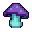

PuRlO
A chill quest for 8 plants
You're a brave little duck. A stoner NPC lost his stash of plants across three dangerous worlds. Collect them all, fight off enemies with nothing but a dash, and bring them home.

A chill quest for 8 plants
You're a brave little duck. A stoner NPC lost his stash of plants across three dangerous worlds. Collect them all, fight off enemies with nothing but a dash, and bring them home.

Three unique biomes with procedurally generated tilemaps. Grasslands, deserts, and dark caves — each with their own look and music.

No weapons. No sword, no gun. Just your legs, a jump, and a dash. Time it right or get wrecked.

8 hidden plants per world. Find them all, bring them back to the stoner, and unlock the path forward.
Grasslands
 Desert
Desert
 Cave
Cave
The skeletons stole the plants. They're not giving them back easy.

Patrols the ground. Chases you on sight. 1 hit to kill.

Flying. Ignores walls. Drops from above. 1 hit to kill.

Bounces around caves. Slow but annoying. 1 hit to kill.
Big. Tough. Takes 3 hits. Never gives up.
"A charming little platformer with real personality. The duck alone is worth the download."
— Pixel Weekly"Tight controls, surprising depth, and a stoner NPC that steals every scene."
— Indie Dev Gazette"Proof that you don't need a big engine or a big team to make something fun."
— Retro Platformer MagPuRlO is the first game I've ever made. I started working on it at 18, with no game development experience, just an interest in programming and pixel art.
I learned C++ through online resources and decided to try making something real. SFML was the graphics library that made sense, so I went with that. No game engine, no shortcuts — just raw C++ and SFML.
The game started as a player that could move and jump. Then enemies. Then tilemaps. Then the NPC system. Then power-ups. Each feature built on the last over several months.
This game isn't perfect. There are bugs, rough edges, and things I'd do differently. But it's mine, and I'm proud of it.
Free and open source. Download the game or build from source.
WASD to move, Space to jump, K to dash into enemies, Shift to sprint, E to talk to NPCs. Collect all 8 plants and return them to the stoner.
WASD — Move. Space — Jump. K — Dash (your only attack). Shift — Sprint. E — Interact/Talk. R — Restart after death.
3 worlds: Grasslands, Desert, and Cave. Each has 8 plants to collect. Clear all three to win.
Speed Boost makes you faster. Ghost Shield makes you invincible for a few seconds. Extra Hearts increase your max health.
Yes. PuRlO is free and open source. You'll need a C++ compiler and SFML 2.6 to build it.
Absolutely. I started at 18 with zero experience. Pick a language, pick a library, and start building. You'll learn as you go.